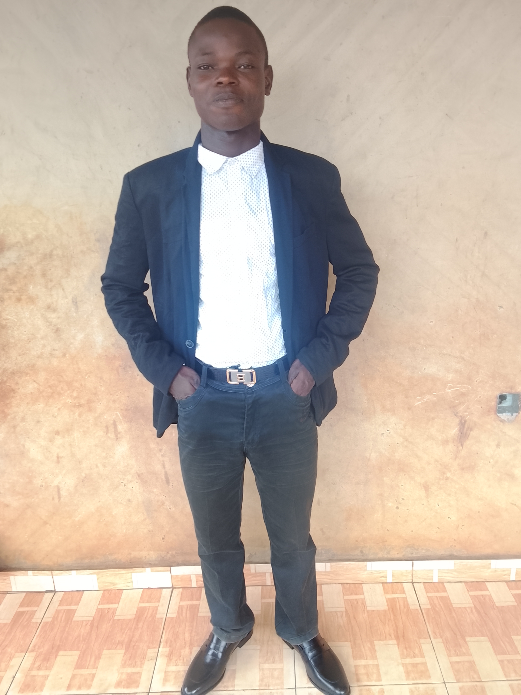

Introduction à Python
Juin — Juil. 2026
Sololearn

Étudiant en Génie Mécanique et Productique à l'Institut National Supérieur de Technologie Industrielle (INSTI) de Lokossa, au Bénin.
J'aime réfléchir, innover et construire. Ma motivation : apporter des solutions concrètes aux problèmes de fabrication et de production dans l'alimentation, l'agriculture et l'industrie.
À terme, je souhaite créer ma propre entreprise de mécanique générale, pour développer des solutions concrètes de mécanisation agricole et de modernisation industrielle au Bénin.
Ouvert aux échanges, stages et collaborations dans la mécanique et la production industrielle.
Toujours classé parmi les meilleurs de sa classe.
Stage d'observation et de pratique en mécanique générale, sous la supervision de l'équipe technique de l'entreprise.
Stage d'observation et de pratique en fabrication et maintenance mécanique. Découverte des activités d'atelier : suivi des processus de fabrication, participation à des opérations de maintenance sous la supervision de l'équipe technique.